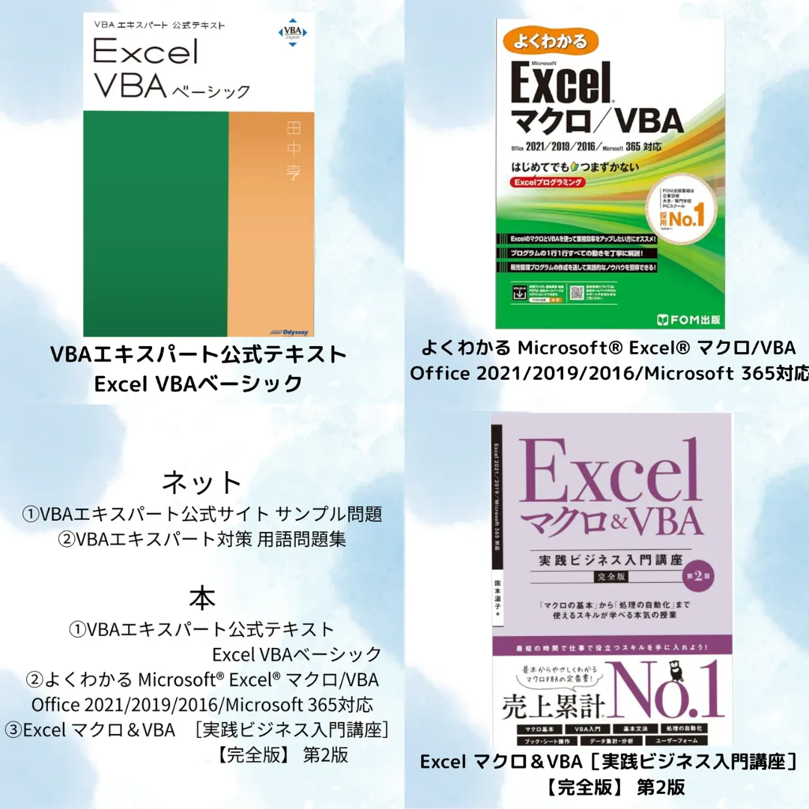

Excel VBA ベーシック

効率よく進める、VBA資格の勉強法
・本とネットの教材をフル活用
・試験予約は早めに済ませて、目標を明確に
・1日30分でもOK、継続がカギ
・試験前はこれまでの復習にあてる
おすすめ書籍
・よくわかる Microsoft® Excel® マクロ/VBA（Office対応）
・Excel マクロ＆VBA 実践ビジネス入門講座［完全版］
・VBAエキスパート公式テキスト Excel VBAベーシック